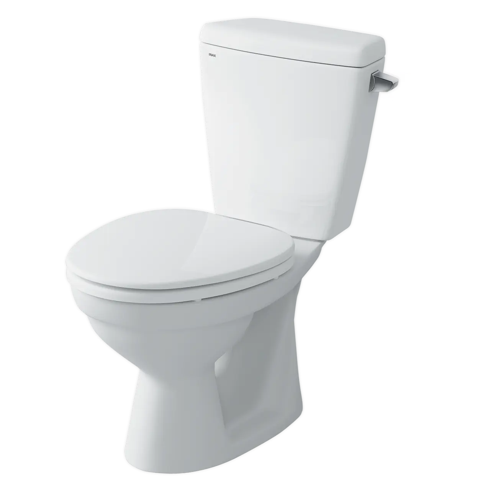
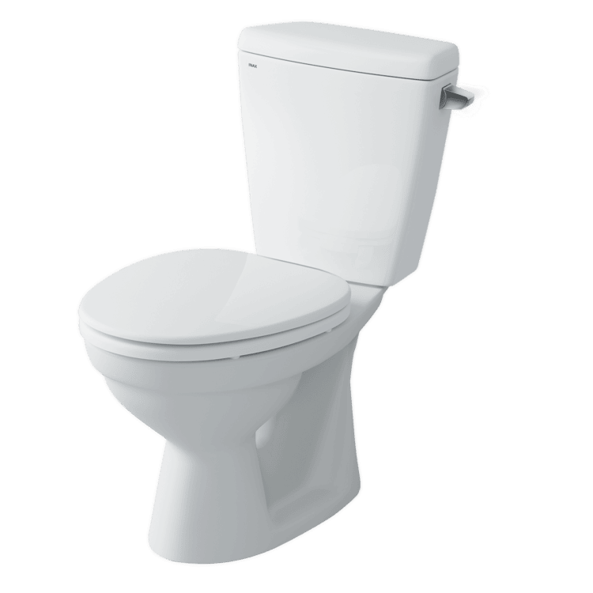
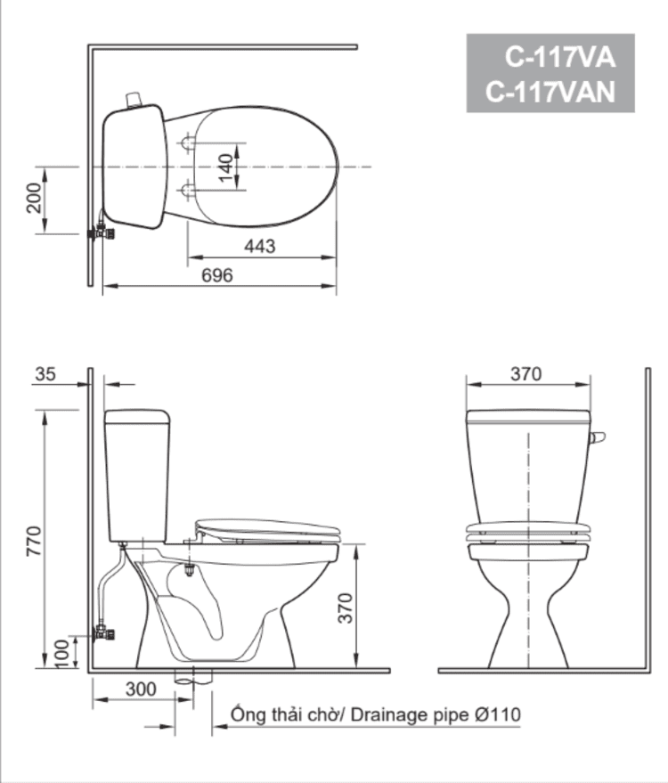

Bồn cầu INAX C-117VA sở hữu kiểu dáng 2 khối với kích thước tổng thể 688 x 370 x 770 (mm), giúp tối ưu không gian phòng tắm có diện tích hạn chế mà vẫn đảm bảo sự hài hòa về mặt thẩm mỹ. Với tông màu trắng chủ đạo, sản phẩm tương thích với hầu hết phong cách nội thất, tạo vẻ đẹp trang nhã và thanh lịch cho không gian nhà tắm.Đặc điểm nổi bật của bồn cầu 2 khối C-117VANắp đóng êm ái, loại bỏ tiếng ồn khó chịu khi đóng nắp, mang lại không gian yên tĩnh và trải nghiệm thoải mái cho người sử dụng.Công nghệ ECO 4.5 siêu tiết kiệm nước, ứng dụng kỹ thuật xả rửa hiện đại giúp tối ưu hóa lượng nước sử dụng trong mỗi lần nhấn.Hệ thống xả gạt tay tiện lợi, với mức xả 4.5L hoặc 6.0L tùy phiên bản, giúp người dùng thao tác dễ dàng và nhanh chóng.Kỹ thuật xả xoáy bước lòng bầu, kết hợp hệ thống xả thẳng mạnh mẽ giúp xả bay mọi chất bẩn một cách hiệu quả.Thiết kế ống thoát đứng, phù hợp với tiêu chuẩn lắp đặt phổ biến, đảm bảo quá trình thoát chất thải diễn ra trơn tru.Để tạo nên không gian phòng tắm đồng bộ và đẳng cấp, khách hàng có thể kết hợp bồn cầu 2 khối INAX C-117VA với các mẫu chậu rửa lavabo và phụ kiện bồn cầu chính hãng khác từ thương hiệu INAX.Video giới thiệu công nghệ Aqua Ceramic độc quyền của INAXBản vẽ bồn cầu 2 khối C-117VAFile hướng dẫn lắp đặt bồn cầu C-117VAThông số kỹ thuậtChất liệuSứ cao cấpKiểu dáng2 khốiKích thước688 x 370 x 770 (mm) (Dài x Rộng x Cao)Thương hiệuINAXThiết kế- Tùy chọn nắp đóng êm hoặc nắp thường CF-37AKV bền bỉ - Tay xả gạt dễ dàng thao tác và sử dụng - Thiết kế nhỏ gọn, tối ưu hoàn hảo cho không gian có diện tích hẹpTính năng- Công nghệ ECO 4.5: Giải pháp siêu tiết kiệm nước tối ưu cho gia đình - Hệ thống xả thẳng kết hợp kỹ thuật xả xoáy giúp xả bay mọi chất bẩn hiệu quảMàu sắcTrắngKhác- Lưu ý: Sản phẩm không bao gồm van chặn nước - Hotline tư vấn và bảo hành: 18006633
Bồn cầu 2 khối C-117VA
Bàn cầu thương hiệu INAX.
Đã cập nhật danh sách yêu thích.
DANH MỤC: Bàn cầu
MÃ SẢN PHẨM: C-117VA
DEPTH: 770mm
HEIGHT: 696mm
WIDTH: 370mm
Bồn cầu INAX C-117VA sở hữu kiểu dáng 2 khối với kích thước tổng thể 688 x 370 x 770 (mm), giúp tối ưu không gian phòng tắm có diện tích hạn chế mà vẫn đảm bảo sự hài hòa về mặt thẩm mỹ. Với tông màu trắng chủ đạo, sản phẩm tương thích với hầu hết phong cách nội thất, tạo vẻ đẹp trang nhã và thanh lịch cho không gian nhà tắm.Đặc điểm nổi bật của bồn cầu 2 khối C-117VANắp đóng êm ái, loại bỏ tiếng ồn khó chịu khi đóng nắp, mang lại không gian yên tĩnh và trải nghiệm thoải mái cho người sử dụng.Công nghệ ECO 4.5 siêu tiết kiệm nước, ứng dụng kỹ thuật xả rửa hiện đại giúp tối ưu hóa lượng nước sử dụng trong mỗi lần nhấn.Hệ thống xả gạt tay tiện lợi, với mức xả 4.5L hoặc 6.0L tùy phiên bản, giúp người dùng thao tác dễ dàng và nhanh chóng.Kỹ thuật xả xoáy bước lòng bầu, kết hợp hệ thống xả thẳng mạnh mẽ giúp xả bay mọi chất bẩn một cách hiệu quả.Thiết kế ống thoát đứng, phù hợp với tiêu chuẩn lắp đặt phổ biến, đảm bảo quá trình thoát chất thải diễn ra trơn tru.Để tạo nên không gian phòng tắm đồng bộ và đẳng cấp, khách hàng có thể kết hợp bồn cầu 2 khối INAX C-117VA với các mẫu chậu rửa lavabo và phụ kiện bồn cầu chính hãng khác từ thương hiệu INAX.Video giới thiệu công nghệ Aqua Ceramic độc quyền của INAXBản vẽ bồn cầu 2 khối C-117VAFile hướng dẫn lắp đặt bồn cầu C-117VAThông số kỹ thuậtChất liệuSứ cao cấpKiểu dáng2 khốiKích thước688 x 370 x 770 (mm) (Dài x Rộng x Cao)Thương hiệuINAXThiết kế- Tùy chọn nắp đóng êm hoặc nắp thường CF-37AKV bền bỉ - Tay xả gạt dễ dàng thao tác và sử dụng - Thiết kế nhỏ gọn, tối ưu hoàn hảo cho không gian có diện tích hẹpTính năng- Công nghệ ECO 4.5: Giải pháp siêu tiết kiệm nước tối ưu cho gia đình - Hệ thống xả thẳng kết hợp kỹ thuật xả xoáy giúp xả bay mọi chất bẩn hiệu quảMàu sắcTrắngKhác- Lưu ý: Sản phẩm không bao gồm van chặn nước - Hotline tư vấn và bảo hành: 18006633
DANH MỤC: Bàn cầu
MÃ SẢN PHẨM: C-117VA
DEPTH: 770mm
HEIGHT: 696mm
WIDTH: 370mm